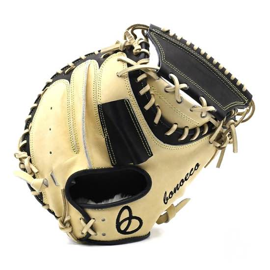
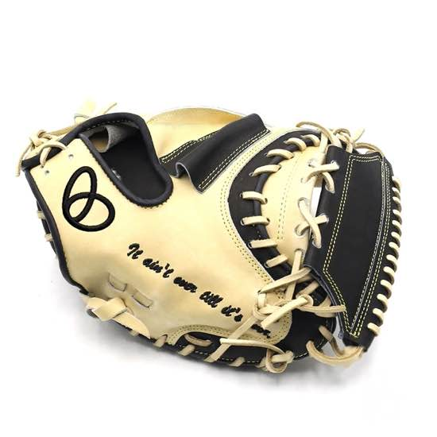

BONOECO
BONOECOBONOECO / catcher
Catcher Mitt
Structured mitts with reinforced pocket construction for receiving.
Confirm size, leather specification, web style, throwing hand, price and availability with us before ordering.
BONOECO / catcher
Catcher Mitts gallery
Structured mitts with reinforced pocket construction for receiving. Photos show sample finishes and construction. Confirm current specifications and availability with us.


